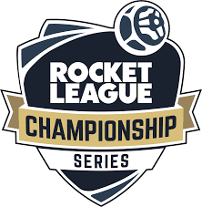

Comunidade Competitiva Rocket League
Rocket League não é apenas diverão casual, ele tem, também, uma cena competitiva forte e consolidada, com milhões de fãs pelo mundo todo.
RLCS - Rocket League Championship Series
O campeonato oficial de Rocket League. Nele, times profissionais do mundo todo disputam por premiações milionárias e prestígio internacional.
Foi desenvolvido pela Psyonix, a desenvolvedora do jogo.
Reúne os melhores times da América do Norte, Europa, Ásia, Oriente Médio e América do Sul.
Times Profissionais em destaque
Team Vitality, Moist Esports e Karmine Corp dominam o cenário europeu.

Gen.G e G2 Esports se destacam na América do Norte.

No Brasil, FURIA, Team Secret e Exeed são nomes fortes na América do Sul.

Destaques Recentes
Em 2025, a FURIA chegou aos playoffs internacionais, vencendo times europeus de peso.
A Karmine Corp conquistou títulos importantes e consolidou sua força global.
A RLCS Major recente contou com partidas históricas e recordes de audiência.
A cada nova temporada, surgem novas rivalidades e momentos épicos e inesqueciveis em cada uma das partidas.
Mais sobre a RLCS de 2025Criadores de Conteúdo e a Comunidade
No Brasil: RomeroBRL, Mojica, MRNightRL e o canal Rocket League Brasil movimentam a cena com tutoriais, notícias e transmissões.
Internacional: SunlessKhan, Musty, Jon Sandman e SquishyMuffinz também são referências, misturando conteúdo educativo e entretenimento.
Outros torneios e eventos
A RLCS é o principal evento do Rocket League, porém, existem outros eventos, tais como:
Torneios organizados pela comunidade (1v1, 2v2 e freestyle)
Eventos semanais dentro do próprio jogo
Competições universitárias e amadoras pelo mundo inteiro

A influência da Epic Games
Desde que a Epic Games comprou a Psyonix, o jogo passou por algumas mudanças:
- Ficou gratuito para todos
- Ganhou integração com a Epic Store
- Novos sistemas de progressão e cosméticos
Apesar das críticas de alguns jogadores, o jogo ainda se mantém vivo e forte, com atualizações frequentes e uma base forte e fiel de fãs.
Mais sobre a Epic Games